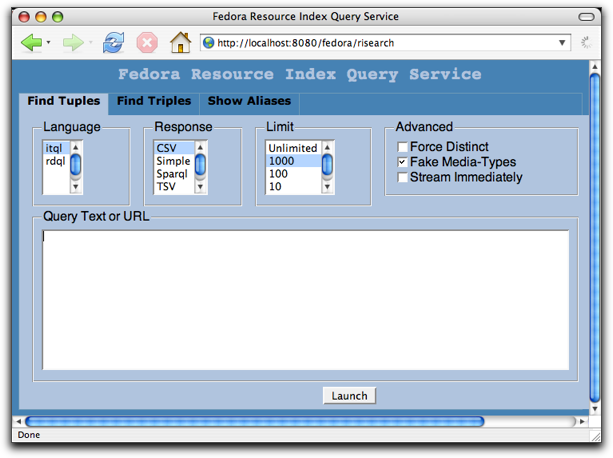
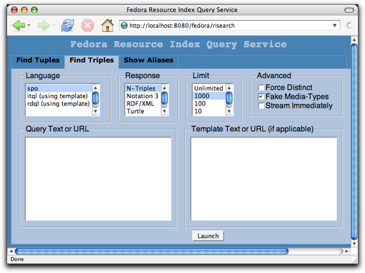

The Resource Index Search Service (RISearch) is a web service that exposes the contents of a repository's Resource Index for outside use. This document introduces the use of this service through a web browser interface, then describes how to access it programmatically.
When your Fedora server is running, the RISearch service will be available
under /fedora/risearch. For example:
http://localhost:8080/fedora/risearch
The user interface consists of three tabs: Find Tuples, Find Triples, and Show Aliases. A detailed description of each of these tabs follows.
The "Find Tuples" tab shown below is used to run tuple queries against the resource index. A tuple query is one that returns a list of named values.
When you enter a query and click "Launch", a new browser window will display the results.
To get an idea of how it works, try the following iTQL query, which asks for information about all Behavior Definition objects in the repository:
select $object $modified from <#ri> where $object <rdf:type> <fedora-model:FedoraBDefObject> and $object <fedora-view:lastModifiedDate> $modified
In response, you should see something like this:
"object","modified" info:fedora/demo:DualResImage,2005-01-27T23:06:54.399 info:fedora/demo:22,2005-01-27T23:06:57.449 info:fedora/demo:12,2005-01-27T23:06:56.662 info:fedora/demo:1,2005-01-27T23:07:00.528 info:fedora/demo:27,2005-01-27T23:07:01.513 info:fedora/demo:Collection,2005-01-27T23:06:58.42 info:fedora/demo:19,2005-01-27T23:06:59.673 info:fedora/demo:8,2005-01-27T23:07:38.978 info:fedora/demo:15,2005-01-27T23:07:41.58
This is a list of comma-separated values, each row representing the URI and modified date of the objects that matched the query.
Above the query text box, you can alter several settings for a query. These settings are described below.
Indicates the query language to use. Valid options are iTQL (a full-featured RDF query language supported by the Kowari Metastore), and RDQL, (a less powerful, but more widely supported query language popularized by the Jena Framework).
Indicates the desired response format. Valid options include:
The maximum number of results to return. It is useful to set this low when testing queries.
Content-Type
HTTP response headers with the responses (to trick browsers into displaying
the results instead of popping up a "Save As/Open With" window).The "Find Triples" tab shown below is used to run triple queries against the resource index. A triple query is one that returns a list of RDF statements (aka triples).
This tab works in much the same way as the "Find Tuples" tab, but supports different response formats and provides a means to convert tuple query results to triples. It also exposes another query language: SPO.
This is a very simple RDF query language, where queries consist of a specific subject (or an asterisk, indicating "any"), a specific predicate (or an asterisk), and a specific object (or an asterisk). The easiest way to learn SPO is by example:
Get all triples in the repository
* * *
Get all triples where the object is demo:1
* * <info:fedora/demo:1>
Get all triples where the subject is demo:1 and the object is demo:2
<info:fedora/demo:1> * <info:fedora/demo:2>A variety of RDF formats are supported:
Templates are used to convert tuple query results to triples. A template consists of one ore more triple binding patterns that reference the binding variables in an iTQL or RDQL query.
The easiest way to understand how this works is by example.
In this example, we'll show how to extract a subgraph from the resource index using iTQL. Enter the following query text:
select $a $r $b from <#ri> where $a <rdf:type> <fedora-model:FedoraObject> and $a $r $b and $b <rdf:type> <fedora-model:FedoraObject>
This query by itself returns all relationships between data objects in a repository. The binding variables are $a, $r, and $b. Now enter the following in the template text box:
$a $r $b
When you launch the query, you'll see a list of triples: the sub-graph of all object-to-object relationships in the repository. (If you don't see anything, you should ingest the demo objects which include some sample relationships).
Now try the following template instead. This demonstrates how to derive new statements from those in the resource index:
$a <urn:example:isRelatedTo> $b $b <urn:example:isRelatedTo> $a
Running the query will now show two statements for every object-to-object relationship in the resource index graph.
Note: When using templates to transform tuples to triples, some duplicates may be returned. These can be avoided by checking "Force Distinct".
This tab shows the aliases that can be used in queries and what URI prefixes they map to.
Aliases are just shortcuts that help make queries easier to write.
For example, in a query you can write <fedora-model:state>
instead of <info:fedora/fedora-system:def/model#state>.
The RISearch service can be programmatically accessed via HTTP GET. As with the user interface, it can be invoked to retrieve tuples or triples. The syntax is described below while the meaning of each parameter is described in the above section.
Note:
http://localhost:8080/fedora/risearch?type=tuples
&lang=iTQL|RDQL
&format=CSV|Simple|Sparql|TSV
&limit=[1 (default is no limit)]
&distinct=[on (default is off)]
&stream=[on (default is off)]
&query=QUERY_TEXT_OR_URL
http://localhost:8080/fedora/risearch?type=triples
&lang=SPO|iTQL|RDQL
&format=N-Triples|Notation 3|RDF/XML|Turtle
&limit=[1 or more (default is no limit)]
&distinct=[on (default is off)]
&stream=[on (default is off)]
&query=QUERY_TEXT_OR_URL
&template=[TEMPLATE_TEXT_OR_URL (if applicable)]